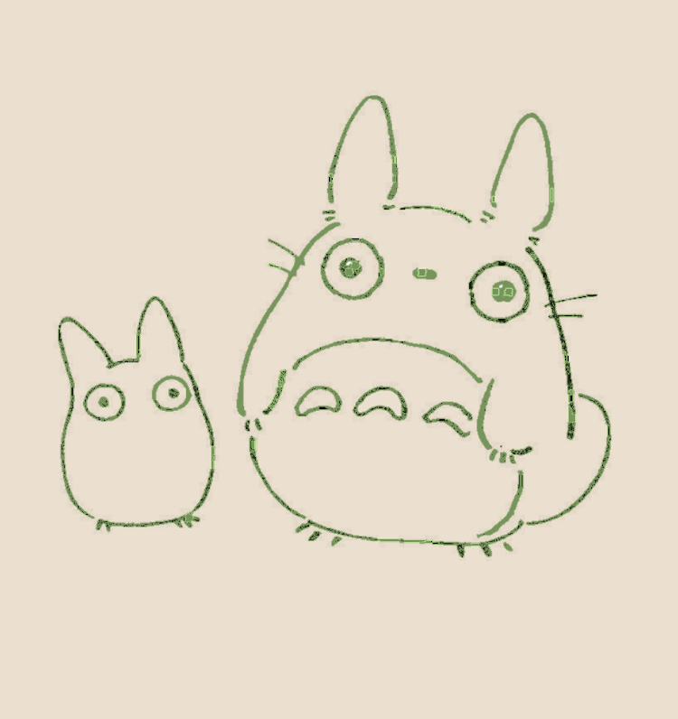
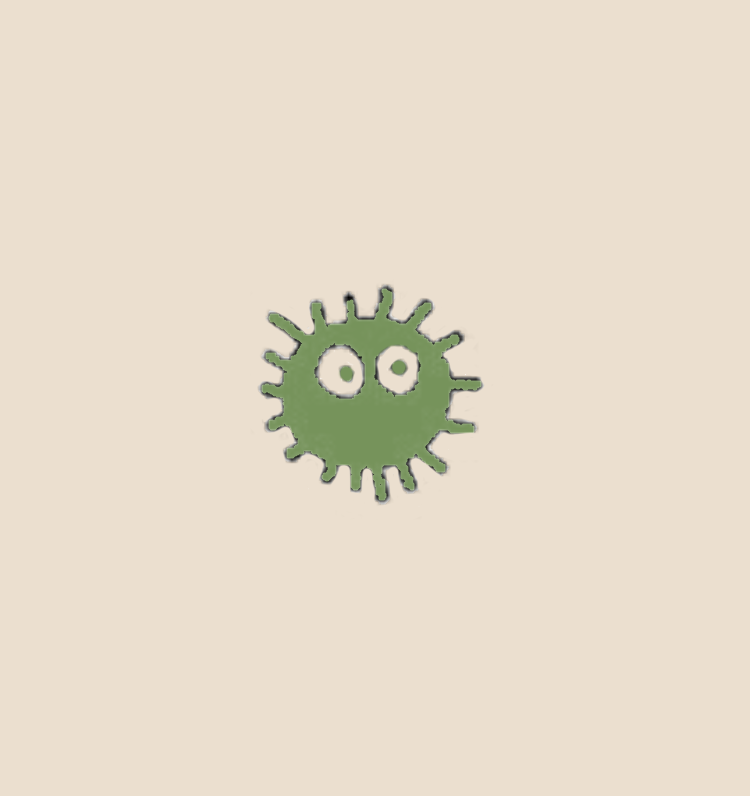
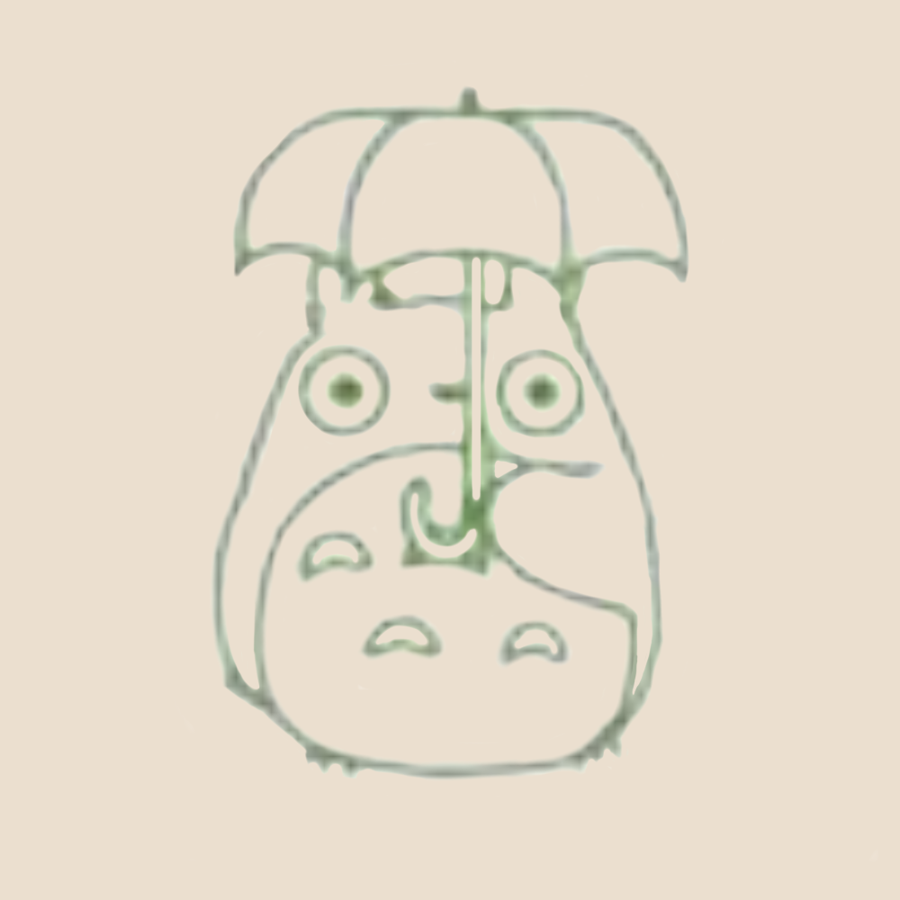

Vous ouvrez un livre sur les légendes du village et vous le feuilletez. Il y a de jolies illustrations à l'intérieur.
Ces esprits sont appelés "Totoro". Il en existe de plusieurs tailles et de couleur différentes. À ce jour, nous avons observé trois Totoros. En général, lorsque l'on dit Totoro, c'est du plus grand que l'on parle. Il semblerait que les petits esprits nous emmènent jusqu'à l'antre du grand si on leur offre des noisettes. D'autres vous diront qu'il faut crier "TONARI NO TOTORO" dès qu'on les aperçoit, afin qu'ils nous guident vers le bon endroit (chez Totoro).
Voici un dessin de "Noiraude". Ce sont des créatures de la taille d'une balle de ping-pong, qui s'installent dans les maisons abandonnées ou les débrits. Elles sont très timides et sensibles à la lumière, c'est pourquoi très peu de personnes en ont vu !
Voilà LE Totoro. Je vous l'accorde, il paraît minuscule sur cette image. Mais ceux qui l'ont aperçu disent qu'il fait la taille d'un ours ! Il habite dans la grande forêt près des rizières, et raffole des glands. Son pelage est gris mais son ventre est blanc avec de drôles de motifs. Un peu comme des flèches ou des accents circonflexes. C'est l'esprit qui fait germer les graines dans nos champs. Nous l'apprécions beaucoup, en particulier les enfants.
Demander autre chose